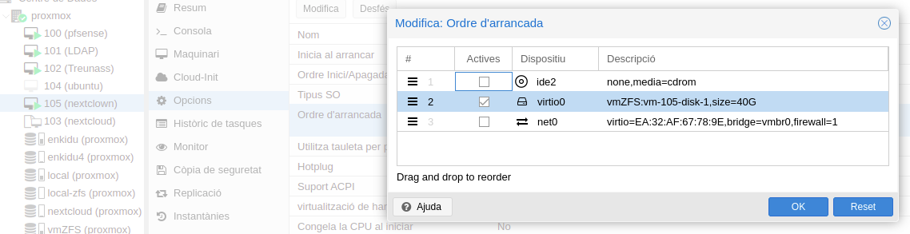
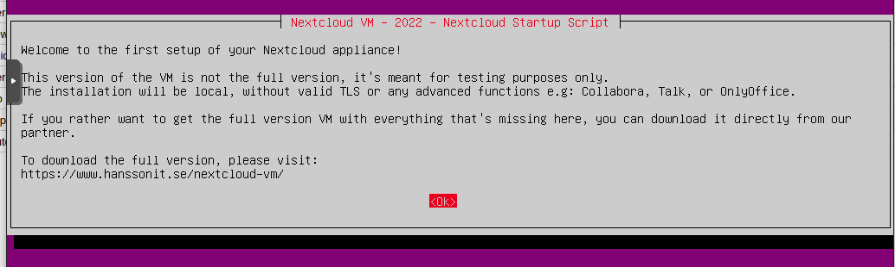
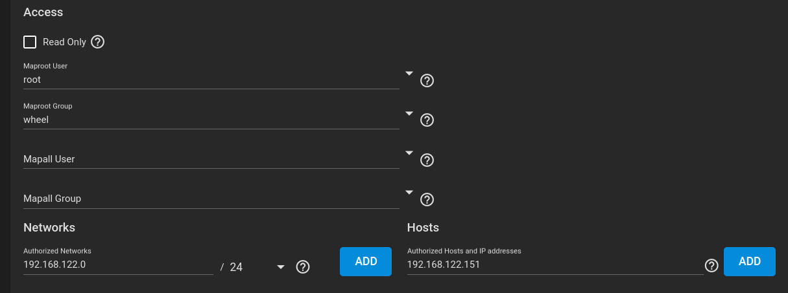

Capitol 8 Nextcloud
provem els scripts de nextcloud/vm Per instal.lar anem inst nextcloud fes la taua vm
sudo git clone https://github.com/nextcloud/vm.git
Provar aço en una ubuntu 20.04 que es la compatible. a vore els scripts que tal van, diu que la harderitza a nivell A+
per manual
sudo unzip nextcloud-23.0.0.zip -d /var/www/html/
sudo mkdir /var/www/html/nextcloud/data
sudo chown -R www-data:www-data /var/www/html/nextcloud/
a part afegim la carpeta on volem guardar les dades, normalment muntarem en mnt un disc per fer-ho, en este cas ho fem en la carpeta home/nextcloud i li donarem permisos a www-data.
abans
mkdir /home/nextcloud
sudo chown -R www-data:www-data /home/nextcloud
install collabora collabora altre oficial , mirar també els connector de libreoffice, si en aço ja sobra… o si el que volen gastar es el Office, hi ha un connector, si ja tenen conter en el online,vincular.
Mirar la possibilitat de implantar Etherpad per al treball col.laboratiu d’escriptura, dins el nextcloud.
Mirar tambe:
libreoffice wopi collabora collabora package
8.1 Pfsense
Per exposar el servidor a internet , configurar el tallafoc, i pensar les opcions de fer un vpn o exposar el ports dels serveis que es vol que ens connectem.
- Mes segur un VPN , en contra, el manteniment, el següent administrador ha de gestionar els certificats dels nous usuaris.
- Exposar soles els ports de nextcloud, https 443, i des de aci accedir a la resta de serveis que es vol donar. Soles es ha de gestionar donar d’alta als nous usuaris, si es deixa configurat un nombre ampli de grups possibles, soles s’ha de afegir al tipus de grup que volem.
8.2 OVA a RAW
baixem la imatge oficial de Nextcloud Primer em de descomprimir
$ tar -xvf Virtual_Appliance_Debian.ova
Official-Nextcloud-VM.ovf
Official-Nextcloud-VM.mf
Official-Nextcloud-VM-disk1.vmdk
Official-Nextcloud-VM-disk2.vmdk
$ ls -la
total 3510908
drwxrwxr-x 2 enkidu enkidu 4096 de maig 28 13:44 .
drwxrwxrwx 4 nobody nogroup 4096 de maig 28 13:37 ..
-rw-r--r-- 1 enkidu enkidu 1797486592 d’oct. 21 2021 Official-Nextcloud-VM-disk1.vmdk
-rw-r--r-- 1 enkidu enkidu 73728 d’oct. 21 2021 Official-Nextcloud-VM-disk2.vmdk
-rw-r--r-- 1 enkidu enkidu 314 d’oct. 21 2021 Official-Nextcloud-VM.mf
-rwxrwxr-x 1 enkidu enkidu 1797574144 de maig 28 13:38 Official-Nextcloud-VM.ova
-rw-r--r-- 1 enkidu enkidu 10133 d’oct. 21 2021 Official-Nextcloud-VM.ovfAra convertim a RAW, Amb el programari Virtualbox és possible convertir fitxers de disc VMDK a format d’imatge RAW.
nota hi ha dos discs un es el de la imatge i el altre sera per a les dades, soles convertim el disk1.vmdk, ja que nol¡saltres ja li donarem un disc de dades en el truenas.
$ VBoxManage clonehd --format RAW Official-Nextcloud-VM-disk1.vmdk Official-Nextcloud-VM-disk.raw
0%...10%...20%...30%...40%...50%...60%...70%...80%...90%...100%
Clone medium created in format 'RAW'. UUID: 8369cf79-ec36-4f53-8691-fd6cfa49b6e9Tambe ho podem fer per les utilitats de qemu-img
$ qemu-img convert -O raw Official-Nextcloud-VM-disk1.vmdk Official-Nextcloud-VM-disc-qemu.raw
$ ls-lha
total 48G
drwxrwxr-x 2 enkidu enkidu 4,0K de maig 28 13:59 .
drwxrwxrwx 4 nobody nogroup 4,0K de maig 28 13:37 ..
-rw-r--r-- 1 enkidu enkidu 40G de maig 28 14:01 Official-Nextcloud-VM-disc-qemu.raw
-rw-r--r-- 1 enkidu enkidu 1,7G d’oct. 21 2021 Official-Nextcloud-VM-disk1.vmdk
-rw-r--r-- 1 enkidu enkidu 72K d’oct. 21 2021 Official-Nextcloud-VM-disk2.vmdk
-rw------- 1 enkidu enkidu 40G de maig 28 13:54 Official-Nextcloud-VM-disk.raw
-rw-r--r-- 1 enkidu enkidu 314 d’oct. 21 2021 Official-Nextcloud-VM.mf
-rwxrwxr-x 1 enkidu enkidu 1,7G de maig 28 13:38 Official-Nextcloud-VM.ova
-rw-r--r-- 1 enkidu enkidu 9,9K d’oct. 21 2021 Official-Nextcloud-VM.ovfno se que fer despres en el RAW, no el pilla
8.2.1 opcio 2
importar el wmdk copiem el arxiu per scp a proxmox en /tmp
scp Official-Nextcloud-VM-disk1.vmdk root@192.168.122.2:/tmp/
root@192.168.122.2's password:
Official-Nextcloud-VM-disk1.vmdk 100% 1714MB 13.8MB/s 02:03Creem una nova màquina sense medi d’instauració i importem el disc
$ qm importdisk 105 /tmp/Official-Nextcloud-VM-disk1.vmdk vmZFS -format raw
importing disk '/tmp/Official-Nextcloud-VM-disk1.vmdk' to VM 105 ...
transferred 0.0 B of 40.0 GiB (0.00%)
transferred 409.6 MiB of 40.0 GiB (1.00%)
transferred 819.2 MiB of 40.0 GiB (2.00%)
transferred 1.2 GiB of 40.0 GiB (3.00%)
transferred 1.6 GiB of 40.0 GiB (4.00%)
transferred 39.2 GiB of 40.0 GiB (98.00%)
transferred 39.6 GiB of 40.0 GiB (99.00%)
transferred 40.0 GiB of 40.0 GiB (100.00%)
transferred 40.0 GiB of 40.0 GiB (100.00%)
Successfully imported disk as 'unused0:vmZFS:vm-105-disk-1'nextcloud disc importat
Després esborrem el disc que havíem creat per crear la VM, disk-0 de 32G i seleccionat el disc nou el afegim, en estos moments esta sense us, el he canviata tambe al tipus VirtlO.
Afegir HD nou i activar-lo
nota tip si per una de estes mpo arranca, mirar en opcions de la VM el ordre de arrancada, pot que siga ISO, NET, HD, e intenta arrancar per xarxa, es canviar el ordre con ho fariem en la bios, i posarl el HD devant de el arranc de xarxa 
nota una vegada arrancada es user: ncadmin passwors: nextcloud
i ens demana que canviem el pasword del admin el teclat …
*nota no es una versio de producio, falten algunes caraccteristique millorades, que es poden instal.lar despres dels scripts explicats mes avall, pero per a fer les proves ens val 
## volum de dades NFS
instalem en el la VM el client de NFS
bash $ sudo apt -y install nfs-common
actualitcem el domini
$ sudo nano /etc/idmapd.confi posem el nostre
{kind=link}
i muntem lel volum que estem servint en truenas
directori servit /mnt/datatruenas/next
primer creem el directori en mnt muntar el recurs i li donem prpopietari
root@nextcloud:/mnt# ls -la
total 12
drwxr-xr-x 3 root root 4096 Oct 21 2021 .
drwxr-xr-x 20 root root 4096 Oct 21 2021 ..
drwxrwx--- 6 www-data www-data 4096 May 28 17:52 ncdata
root@nextcloud:/mnt# mkdir -p /mn/datanext
root@nextcloud:/mnt# chown www-data:www-data /mnt/datanext
root@nextcloud:/mnt# chmod 770 /mnt/datanext
root@nextcloud:/mnt# ls -la
total 16
drwxr-xr-x 4 root root 4096 May 28 18:51 .
drwxr-xr-x 20 root root 4096 Oct 21 2021 ..
drwxrwx--- 2 www-data www-data 4096 May 28 18:49 datanext
drwxrwx--- 6 www-data www-data 4096 May 28 17:52 ncdataara muntem el volum Modifique el /etc/fstab per fer persistent este directori afegint la linea > 192.168.122.231:/mnt/datatruenas/next /mnt/datanext nfs auto,nofail,noatime,nolock,intr,tcp,actimeo=1800 0 0
editem fstab
nota les ip son provisionals, quant configurem el DNS ho canviarem
root@nextcloud:/mnt# mount -t nfs 192.168.122.231:/mnt/datatruenas/next /mnt/datanext/i comprovem que anat tot be
root@nextcloud:/mnt# df -h
Filesystem Size Used Avail Use% Mounted on
udev 3.8G 0 3.8G 0% /dev
tmpfs 778M 1.2M 777M 1% /run
/dev/mapper/ubuntu--vg-ubuntu--lv 39G 5.9G 31G 17% /
tmpfs 3.8G 16K 3.8G 1% /dev/shm
tmpfs 5.0M 0 5.0M 0% /run/lock
tmpfs 3.8G 0 3.8G 0% /sys/fs/cgroup
/dev/vda2 976M 103M 806M 12% /boot
/dev/loop1 56M 56M 0 100% /snap/core18/2128
/dev/loop3 62M 62M 0 100% /snap/core20/1169
/dev/loop5 68M 68M 0 100% /snap/lxd/21545
/dev/loop7 56M 56M 0 100% /snap/core18/2409
/dev/loop8 62M 62M 0 100% /snap/core20/1494
/dev/loop0 45M 45M 0 100% /snap/snapd/15904
/dev/loop6 68M 68M 0 100% /snap/lxd/22753
tmpfs 778M 0 778M 0% /run/user/1000
192.168.122.231:/mnt/datatruenas/next 30G 128K 30G 1% /mnt/datanextAra em de pasar les carpetes creades en ncdata a el nou directori i redreccionar en la configuraio de nextcloud
root@nextcloud:/mnt# ls -hla /mnt/ncdata/
total 40K
drwxrwx--- 6 www-data www-data 4.0K May 28 17:52 .
drwxr-xr-x 4 root root 4.0K May 28 18:51 ..
drwxr-xr-x 4 www-data www-data 4.0K May 28 17:05 2585289c-72e1-103c-8cae-9fbe74979792
drwxr-xr-x 8 www-data www-data 4.0K May 28 16:38 appdata_ocru8ytkzh2p
-rw-rw-r-- 1 www-data www-data 0 Oct 21 2021 audit.log
-rw-r--r-- 1 root www-data 542 Oct 21 2021 .htaccess
drwxr-xr-x 4 www-data www-data 4.0K May 28 16:38 incitato
-rw-rw-r-- 1 www-data www-data 0 May 28 16:35 index.html
-rw-rw-r-- 1 www-data www-data 0 May 28 16:35 .ocdata
-rw-rw-r-- 1 www-data www-data 11K May 28 16:35 updater.log
drwxrwxr-x 4 www-data www-data 4.0K May 28 16:35 updater-ocnota warn hem de posar en el truenas permis per al root per poder copiar els arxius, despres ho canviaerm a www 
apaguem el servei apache per a que no canvie els arxius mentres els estem copiena
$ sytemctl stop apache2
$ cp -R /mnt/ncdate/ /mnt/datanext/nota igual no es bona idea, per a descartar al fer les copies de seguritat de les VM no podem descartar este volum en elles, i la millor forma seria afegir per proxmox un disc dur que siga este recurs NFS i muntarlo en el directori de ncdata
Em de canviar el directori que apunta les dates en el fitxer de configuracio
root@nextcloud:/home/ncadmin# nano /var/www/nextcloud/config/config.phpi canviar datadirectory per el nou
‘datadirectory’ => ‘/mnt/datanext’,
Canvit de directori de dades
copiem el .htaccess i li donem els mateixos permisos que tenia
root@nextcloud:/mnt# cp ncdata/audit.log index.html .ocdata /mnt/datanext/
root@nextcloud:/mnt# ls -la /mnt/ncdata/.htaccess
-rw-r--r-- 1 root www-data 542 Oct 21 2021 /mnt/ncdata/.htaccessi li posem els mateixos permisos
root@nextcloud:/mnt# ls -la ncdata/
total 40
drwxrwx--- 6 www-data www-data 4096 May 28 20:30 .
drwxr-xr-x 4 root root 4096 May 28 18:51 ..
drwxr-xr-x 4 www-data www-data 4096 May 28 17:05 2585289c-72e1-103c-8cae-9fbe74979792
drwxr-xr-x 8 www-data www-data 4096 May 28 16:38 appdata_ocru8ytkzh2p
-rw-rw-r-- 1 www-data www-data 0 Oct 21 2021 audit.log
-rw-r--r-- 1 root www-data 542 Oct 21 2021 .htaccess
drwxr-xr-x 4 www-data www-data 4096 May 28 16:38 incitato
-rw-rw-r-- 1 www-data www-data 0 May 28 16:35 index.html
-rw-rw-r-- 1 www-data www-data 0 May 28 16:35 .ocdata
-rw-rw-r-- 1 www-data www-data 10870 May 28 16:35 updater.log
drwxrwxr-x 4 www-data www-data 4096 May 28 16:35 updater-ocru8ytkzh2p
root@nextcloud:/mnt# cd ncdata/
root@nextcloud:/mnt/ncdata# cp audit.log index.html .ocdata /mnt/datanext/
root@nextcloud:/mnt/ncdata# ls -la /mnt/datanext/
total 19
drwxrwx--- 3 root www-data 7 May 28 20:48 .
drwxr-xr-x 4 root root 4096 May 28 18:51 ..
drwxr-xr-x 3 www-data www-data 3 May 28 20:43 appdata_ocru8ytkzh2p
-rw-r--r-- 1 root www-data 0 May 28 20:48 audit.log
-rw-r--r-- 1 www-data www-data 542 May 28 20:27 .htaccess
-rw-r--r-- 1 root www-data 0 May 28 20:48 index.html
-rw-r--r-- 1 root www-data 0 May 28 20:48 .ocdata
root@nextcloud:/mnt/ncdata# cd /mnt/datanext/
root@nextcloud:/mnt/datanext# chown www-data audit.log index.html .ocdata
root@nextcloud:/mnt/datanext# chown root .htaccess
root@nextcloud:/mnt/datanext# chmod 664 audit.log index.html .ocdata
root@nextcloud:/mnt/datanext# ls -la
total 19
drwxrwx--- 3 root www-data 7 May 28 20:48 .
drwxr-xr-x 4 root root 4096 May 28 18:51 ..
drwxr-xr-x 4 www-data www-data 4 May 28 20:50 appdata_ocru8ytkzh2p
-rw-rw-r-- 1 www-data www-data 0 May 28 20:48 audit.log
-rw-r--r-- 1 root www-data 542 May 28 20:27 .htaccess
-rw-rw-r-- 1 www-data www-data 0 May 28 20:48 index.html
-rw-rw-r-- 1 www-data www-data 0 May 28 20:48 .ocdataCanviem els propietari en truenas per al recurs compartit per a www
Canvir de propietari a www
Entrem en Nextclown com a usuari i veiem que es crea la seua carpeta en el nou directori de dades
root@nextcloud:/mnt/datanext# ls -la
total 20
drwxrwx--- 4 root www-data 8 May 28 21:03 .
drwxr-xr-x 4 root root 4096 May 28 18:51 ..
drwxr-xr-x 5 www-data www-data 5 May 28 21:03 appdata_ocru8ytkzh2p
-rw-rw-r-- 1 www-data www-data 0 May 28 20:48 audit.log
-rw-r--r-- 1 root www-data 542 May 28 20:27 .htaccess
drwxr-xr-x 4 www-data www-data 4 May 28 21:04 incitato
-rw-rw-r-- 1 www-data www-data 0 May 28 20:48 index.html
-rw-rw-r-- 1 www-data www-data 0 May 28 20:48 .ocdataAra creem una carpeta en l’usuari i en el GUI la crea i en el directori tambe apareix.
Afegim una carpeta de prova
root@nextcloud:/mnt/datanext# ls -la incitato/files/
total 2
drwxr-xr-x 3 www-data www-data 3 May 28 21:09 .
drwxr-xr-x 5 www-data www-data 5 May 28 21:09 ..
drwxr-xr-x 2 www-data www-data 2 May 28 21:09 carpetaProvaEl qu no tinc clar es si al fer la copia de seguretat de la VM tambe el fa de la carpeta NFS, no es el volem. La d’aquesta carpeta la farem en truenas. Al provar fer una copia de seguretat el proxmox soles veu el disc de la VM, pareix que tot correcte, per em de fer mes proves.
copia de seguretat